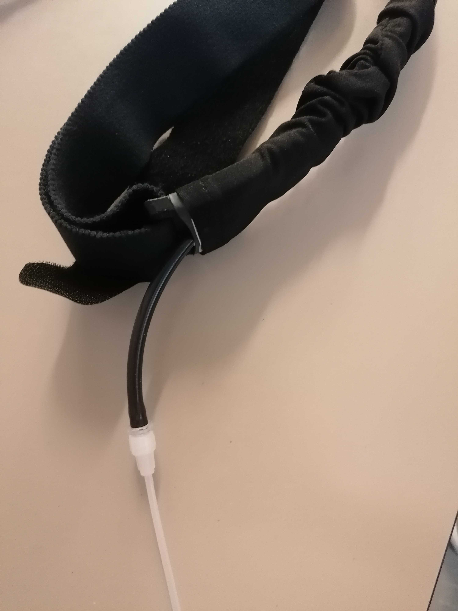

Preparing the participant
Procedures for when the participant has arrived
It is critical to stay alert and anticipate any potential risk to the participant to avert them. This is particularly important for the first session.
Participant reception¶
- Meet the participant at an easily locatable place (e.g., the reception desk of the Radiology Unit) and show them the way into the control room. Allow sufficient time before the experiment for the preparation (min. 30 minutes).
- Show the participant the scanning room and explain to them how the device is controlled from outside.
-
Ask the participant to fill out the consent form and MRI safety screener, and verbally confirm responses, paying attention to frequently forgotten devices and implants, like orthodontia.
DO NOT subject the participant to any risk
- In case of any doubts emerging from the MRI safety screening, contact ███ immediately at ###-###-####. DO NOT PROCEED if the medical contact cannot be reached.
- In case of discovering any previously undisclosed contraindication, the volunteer MUST NOT participate in the study.
-
Load the adequate protocol (guidelines here). Verify you are loading the appropriate phase-encoding (PE) direction corresponding to the session.
Session schedule
session day PE replaces 1 2023-10-20 LR 2 2023-10-20 LR 3 2023-10-21 LR 4 2023-10-21 RL 5 2023-10-22 PA 6 2023-10-22 PA 7 2023-10-23 LR 8 2023-10-23 RL 9 2023-10-24 AP 10 2023-10-24 RL 11 2023-10-25 AP 12 2023-10-25 PA 13 2023-10-26 PA 14 2023-10-26 LR 15 2023-10-27 AP 16 2023-10-27 RL 17 2023-10-28 PA 18 2023-10-28 LR 19 2023-10-29 PA 20 2023-10-29 RL 21 2023-10-30 RL 22 2023-10-30 AP 23 2023-10-31 AP 24 2023-10-31 AP 25 2023-11-01 RL 26 2023-11-01 PA 27 2023-11-02 AP 28 2023-11-02 RL 29 2023-11-03 PA 30 2023-11-03 AP 31 2023-11-04 PA 32 2023-11-04 AP 33 2023-11-05 LR 34 2023-11-05 LR 35 2023-11-06 LR 36 2023-11-06 RL 37 2023-11-09 LR 2 38 2023-11-09 PA 12 39 2023-11-10 LR 14 40 2023-11-10 AP 27 41 2023-11-11 AP 30 42 2023-11-11 PA 31 43 2023-11-12 AP 32 44 2023-11-12 LR 33 45 2023-11-13 LR 34 46 2023-11-13 LR 35 47 2023-11-14 RL 36 48 2023-11-14 PA 29
Preparation of the participant in the CONTROL ROOM¶
Collecting participant's data¶
- Measure the participant's blood pressure and write it in the covariates collection form.
- Ask the participant to fill out the
Before scanpart of the covariates collection on the issue you opened earlier. - Remind the participant to use the bathroom at this moment if they need (███).
Only female participants, only the first session
-
Remind the participant that for their safety, pregnant women cannot participate:
Hey [NAME], I have to remind you that pregnant women cannot participate for their safety.
To be absolutely sure that you are not scanned while being pregnant, the ethical review board requests us that you take a pregnancy test before the first session. Here you have a test, and this is the urine sample cup. I'm going to show you the bathroom now so that you can do the test with the necessary privacy.
-
Provide the participant with a pregnancy test and a urine sample cup.
- Go over the instructions with them.
- Accompany them to the bathroom (situated at ███), and ask whether there is anything else they anticipate they will need.
- If the test is positive, the person CANNOT PARTICIPATE in the study. You MUST be understanding of the situation as most likely the person will not be aware of the circumstance.
-
Instruct the participant on how to use the alarm button:
Alarm button should be used when needed
During the duration of the exam, you'll have an alarm button on your hand. You can use it at any moment. We will first talk with you to check everything is fine, and we will stop the session whenever you need to stop the experiment. There is no need for you to endure uncomfortable experiences or anxiety (for instance, if you feel claustrophobic)
Describing the development of the session¶
-
Describe the participant how the session will develop, with special attention to tasks. In the first session, show the task while explaining them for clarity. Let them interrupt you to ask for clarifications and answer all the questions that may arise.
Script for the first session
We are going to acquire three types of images. The first type is anatomical imaging that we use to study the morphology of the brain. The second type is diffusion MRI, which we use to infer the pathways of major fiber bundles showing how the different regions of the brain may be interconnected. Finally, we collect functional MRI, which we use to understand how the brain activates as a response to stimuli we will present to you. During the whole duration of the exam, please do not create closed loops by crossing your legs or holding your hands together. It is possible that your peripheral nerves get stimulated at some points, so you will feel twitching of muscles, for instance, of your pectorals. Do not panic, it is okay, but if it feels too uncomfortable, please squeeze the alarm button.
For the anatomical and the diffusion MRI we just ask you to relax and try to stay as still and comfortable as possible. Like a photographic camera, the largest problem making analyses difficult is motion. As opposed to a photo camera, the imaging of the brain happens very slow so there is a lot of opportunity for involuntary movements (e.g., when you blink or you take a deeper breath) or semi-voluntary (e.g., you need to swallow).
The functional MRI is a bit more entertaining, as we will ask you to engage in different behavioral activities. The first functional block is what we call a positive-control task, that will tell us little about your brain but will help us determine if there are confounding signals intermixed with your data. In this positive-control task, you will be shown a fixation point with the shape of a circle. Whenever you see that fixation point, please focus your gaze at the center of it. At points the fixation point will browse around the screen. When that happens, please follow it with your eyes taking care of not moving your head with the eye movement. Other times it will be fixed on the center, and have a blank gray background or a flickering or grating circular area behind it. The last element of this block will show the words LEFT or RIGHT. When either appears, please tap your thumb on each of the your other four fingers of the hand designated by the word, sequentially with all fingers and reversing the direction at the extremes (your pointer and your pinkie). This quality-control task has a length of 2min 38s. During this task, please leave the alarm button on your tummy, where you can recover it when it finishes.
Then there is a long block of 20min 6s that we call resting state. During this block, all you have to do is stay still and look at the movie. Please do not close your eyes.
Finally, a breath-holding task will help us understand the signals elicited by your breathing that are detected by the scanner. This block has a length of 5min 41s. You will watch five repeats of the same block. Each block will show you a colored rectangle in the middle. The green rectangle means breathe in, the yellow rectangle means breathe out, and the red rectangle means hold your breath. The last two green and yellow rectangle will be shown on a lighter green and orange color respectively to signal you that a hold will follow immediately after the breathe-out. The red rectangle will turn pink to indicate that you will soon be able to breathe-out any remaining air in your lungs and breathe in again. Please remember to breathe out after the breath-hold. When no rectangle is presented, you can breathe as it feels more comfortable to you. The first of the blocks is a mock. That will be reminded to you at the beginning of the task on the screen. During the mock block, please look at the stimuli on the screen but keep your habitual breathing pace disregarding the task instructions. At the end of this mock block, a message will remind you to follow the task instructions from that moment on. You must adapt your breathing to the pace indicated by the color-changing rectangle in the center of the screen for the remaining four repetitions of the block.
Is everything clear to you? Do you have any questions?
Script for the following sessions
As you probably remember, we acquire three types of images. For two of them you just stay still in the scanner, but we will also require your collaboration for the third, which is functional MRI. During the whole duration of the exam, please do not create closed loops by crossing your legs or holding your hands together. Also, remember to breathe through your nose, not through your mouth, so the expired CO2 can be measured with the cannula. It is possible that your peripheral nerves get stimulated at some points, so you will feel twitching of muscles, for instance, of your pectorals. Do not panic, it is okay, but if it feels too uncomfortable, please squeeze the alarm button.
Let's quickly recap the functional MRI tasks. The first is the positive-control task, you will be shown a fixation point with the shape of a circle that you must follow with your gaze wherever it goes and then the words LEFT or RIGHT while which you tap your fingers like this (remind to them). During this task, please leave the alarm button on your tummy, where you can recover it when it finishes.
Then there is a long block of about 20 minutes that we call resting state, where you will be watching a movie. During this block, all you have to do is stay still and please do not close your eyes.
Finally, the breath-holding task where you will watch five repeats of the same block with colored rectangles in the middle. The green rectangle means breathe in, the yellow rectangle means breathe out, and the red rectangle means hold your breath. The last two green and yellow rectangle will be shown on a lighter green and orange color respectively to signal you that a hold will follow immediately after the breathe-out. The red rectangle will turn pink to indicate that you will soon be able to breathe-out any remaining air in your lungs and breathe in again. Please remember to breathe out after the breath-hold. When no rectangle is presented, you can breathe as it feels more comfortable to you. The first of the blocks is a mock. That will be reminded to you at the beginning of the task on the screen. During the mock block, please look at the stimuli on the screen but keep your habitual breathing pace disregarding the task instructions. At the end of this mock block, a message will remind you to follow the task instructions from that moment on. You must adapt your breathing to the pace indicated by the color-changing rectangle in the center of the screen for the remaining four repetitions of the block.
Is everything clear to you? Do you have any questions?
Finalizing the preparation¶
-
Offer the participant a box to deposit everything they have in their pockets and all jewelry/hair accessories, and indicate the clothing to enter the scanning room:
Dress code inside the scanner if they need to CHANGE INTO SCRUBS
Before we continue, we need to make sure we do not introduce any dangerous object in the magnet room.
Here you will find a changing room [SHOW THEM THE CHANGING ROOM]. I have prepared some scrubs for you. Please remove all your clothes and leave them in the changing room. Please keep your underwear on [if a woman, ask whether their undergarment DOES NOT contain any large metallic part such as shaping guides, and request their removal if they do].
Dress code inside the scanner if they CAN WEAR THEIR CLOTHES
Before we continue, we need to make sure we do not introduce any dangerous object in the magnet room.
Please deposit here all your belongings, your belt, your glasses, your jewelry and any accessories, piercings, etc. that you have on you. If a woman, ask whether their undergarment DOES NOT contain any large metallic part such as shaping guides, and request their removal in the changing room.
-
Help the participant to prepare their skin and place the ECG electrodes.
Installing the participant in the SCANNING ROOM¶
- Have the participant remove their shoes at the entrance of the scanning room.
- Show the alarm button to the participant and explain how they may use it.
- Give to the participant the emergency button. Make the participant try it, so they can see it works. To switch off the alarm, there's a button on the scanner (circular, both on the left and on the right of the hole)
- Give them the ear-plugs to protect their hearing during acquisition, allow time for them to place them.
- Instruct the participant to lay on the MRI bed.
Connecting physiological recording sensors and probes¶
- Connect the ECG leads to the three electrodes. The electrodes MUST be connected following the color scheme shown in the picture below.
- Install the RB below the participant's chest and connect it to the tube as shown in the picture below. The RB measures the stretching induced by breathing, so it MUST surround the chest or stomach comfortably. Positioning the RB higher (chest) or lower (stomach) depends on the individual's preferential respiration mode (chest breathing or diaphragmatic, respectively). 
-
Place the nasal cannula in the nose of the participant making sure the two protrusions are aligned with the nostrils of the participant. Place the tube behind the ears and tighten under the chin for comfort and stability by sliding the ring as shown in the picture below.

-
Fasten the RB and check with the participant whether they are too uncomfortable when completely laying down on the bed.
-
Check the AcqKnowledge signal visualization of the adjustment of the RB, and make sure that the signal is not saturating (when the RB is too tight) or too weak (when the RB is too loose).
Two-people protocol to check the RB settings.
This check requires two experimenters, one INSIDE (IN) the scanning room and one more outside (OUT)
- OUT indicates they are ready to start the check by signaling a THUMBS-UP WITH BOTH HANDS through the Scanning Room window .
- IN MUST confirm they understand returning the THUMBS-UP WITH ONE HAND .
- IN finalizes the setting of the RB if necessary and asks the participant to breathe normally.
- Once the participant is lying down on the bed and breathing normally, and the check can be carried out, IN MUST signal they are ready by sending a THUMBS-UP WITH BOTH HANDS through the window.
- OUT MUST acknowledge the understanding, return a THUMBS-UP WITH BOTH HANDS , and check the AcqKnowledge screen.
- OUT checks for signs of saturation and insufficient dynamic range. These issues manifest as plateaus and excessively flat lines (respectively) in the AcqKnowledge visualization of the RB signal.
- OUT provides feedback to the inside room as follows:
- If the RB must be tightened up, pointer finger going up ;
- if the RB must be loosened up, pointer finger going down ;
- if OUT needs to check again, they show two hands , checks the AcqKnowledge again and signs another instruction; and
- if the check is finished, OUT signs a THUMBS-UP WITH BOTH HANDS .
- IN MUST acknowledge all the commands with THUMBS-UP WITH ONE HAND if understood. If not understood, they can request with a PRAYING gesture .
-
Solicit feedback on participant's comfort while positioning them on the scanner bed and suggest ergonomic positioning of their arms to avoid discomfort.
Accommodating the participant's head in the coil¶
- Adjust the participant inside. With the paddings, their head position MUST be adjusted and elevated so that the nose and the forehead of the participant are both close to the upper coil. This procedure ensures the ET has the clearest possible view of eye.
- This part must be repeated taking out and putting back the upper part of the head-coil, adjusting the pillow at every step, until the head is fixed and the nose and forehead of the participant almost touch the coil. In case of need, ask the participant to rotate their head like when saying yes until reaching an adequate position, place any remaining paddings.
- Take the side paddings and fit them between each ear and the coil. If using the inflatable padding, pump air into them without making the participant uncomfortable (check with them).
- Cut a long strip of medical auto-adhesive band and stick it at each side of the lower block of the head coil, across the participant's forehead and stick it to the participant's forehead. Indicate the participant that this band will tell them when they moved and help them recover the original position.
- Place the top block of the coil and check that the participants' front touches or is really close to the coil. Now the nose can also be a bit far from the coil. Tell the participant to relax the neck, so the nose should go a bit up and touch the coil.
- Connect the coil's cable to the corresponding socket on the table.
- Check that both the posterior and anterior parts of the head-and-neck coil are now detected:
- Verify "Head Neck 64 Posterior" is listed on the scanner's monitor, and
- Verify "Head Neck 64 Anterior" is listed in the scanner's monitor.
- Place rectangular paddings at each side of the chest and help the participant accommodate their elbows on them.
-
Cover them with a blanket if necessary, and remind them of not closing loops with their body:
Ask the participant if they are feeling cold
Hey [NAME], are you feeling cold? Do you want a blanket?
I have placed some paddings for your elbows, is there anything else you would need to feel comfortable?
Throughout the examination, remember not to create closed loops by crossing your legs or holding hands together.
-
Insert the participant in the scanner following the protocol.
- Once the participant is lying on the scanner bed, check that no arms/legs rest on the GA or the RB tubes and may block them.
- Before continuing with the setup, make sure all cables and tubes leave the scanner's bed perpendicularly and lie on the floor. Tape them to the floor so that they don't move accidentally.
Final preparations¶
- Inform the participant that you are leaving the room and will shortly come back for a final preparation.
- Proceed with the ET aiming and focusing protocol.
- Inform the participant that you are leaving the room and will now close the door to start. Let them also know that you are going to communicate with them very shortly to check that communications through the speaker are functioning.
- Exit the Scanning Room.
- Close the Scanning Room door.
-
Check the communication with the participant.
Do not allow a delay before talking to the participant
Delays in establishing contact with the participant will likely increase their anxiety.
You can now move on to initiating the session